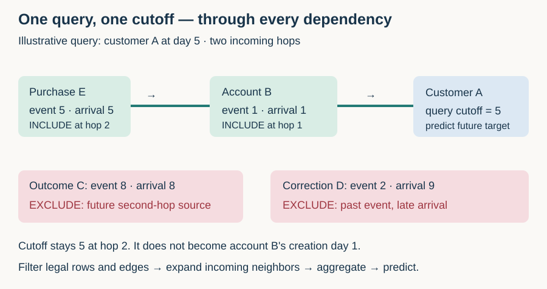
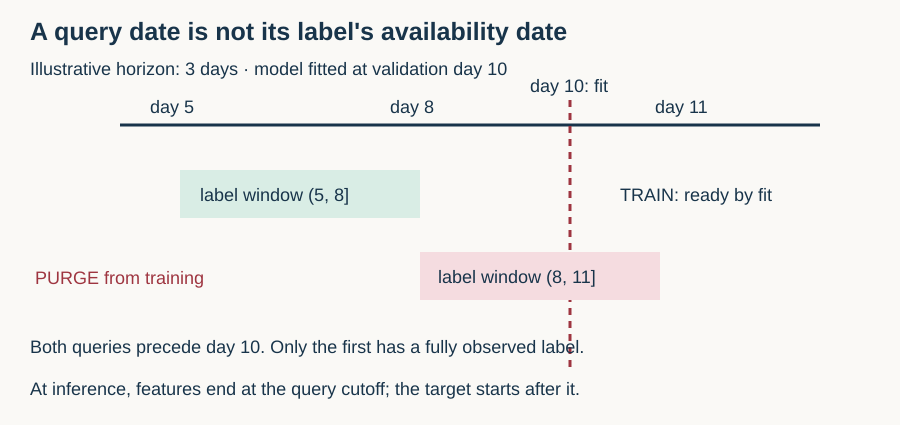

Year 3 · Quarter 3 · Lesson 101
Static vs temporal: a graph query cannot read its future
Student notebook · Executed solution · Read the lab · Reproduction contract
1 · Close the notes: retrieve the old boundaries¶
Before reading, write three answers. In L002, why can a correct SQL join still leak? In L055, why can random rows answer a different question from future rows? In L100, why does a sampled context node not automatically receive a label loss?
Feedback — open after trying
A join can attach a value learned after prediction time. Random rows can mix historical regimes and future information into training. Context supplies messages; only the chosen seeds supply supervised targets. Today we add a time boundary to all those dependencies.
The tangible win. Given a typed entity, a prediction time and a horizon, determine which inputs and labels are legal. Work through sections 2–5 first; then implement the three notebook tasks. The full real-data baseline replay is small enough to run in the same session.
This advances the mission: a relational model must earn its score using information that would exist in deployment. L100 defended identity, sampled dependencies and seed losses on a static graph. It did not test whether every dependency existed at a historical query time. This is the missing boundary before L102's temporal memory models.
2 · Static is a task assumption, not a file format¶
A static graph task predicts with one declared graph snapshot. A temporal task predicts at a particular time using a permitted history. A file saved today can contain decades of events; reading it as one graph does not make its information historically available.
A random node split can be valid for a declared static, transductive task: the model is allowed to see unlabeled graph structure at evaluation nodes. It is not automatically valid for forecasting. The mistake is using that static information contract while claiming to predict an earlier future.
In plain terms. Hide the answers and also hide the routes through which tomorrow's facts could reveal them.
Primary reading. Fey et al., ICML 2024, sections 3.2–3.3 and Appendix A–B describe relational rows as typed nodes and construct a computation graph for a seed entity and seed time. A seed is the entity whose output we want. Its computation graph contains the dependencies needed to calculate that output. The temporal neighborhood rule admits neighbor rows whose timestamps do not exceed the seed time.
The course implements that visibility mechanism transparently. We additionally separate event time from arrival time and attach availability to edges. These are explicit deployment-oriented extensions; the paper's single row timestamp does not itself supply versioned business records.
3 · Give the query a clock¶
A query is (entity, t, Δ): the typed entity, the prediction cutoff t, and a future horizon Δ. Its input uses history through t. Its target describes the interval (t, t + Δ]. The left endpoint is excluded; the right endpoint is included.
Worked example. At day 5, predict purchases during days greater than 5 and at most 8. A purchase at exactly day 5 can be an input under our inclusive observation convention. It is not part of that future target. If production predicts at the beginning of a day, same-day events may not be known: define a finer timestamp or use a strict boundary. Never silently swap conventions.
Two clocks matter. Event time says when the event happened. Availability time says when the predictor could first access the record. A correction may refer to day 4 but arrive on day 7. A day-5 predictor cannot use it.
The row predicate is:
(event_time <= query_time) and (available_time <= query_time)
Changing only the cutoff should change the visible inputs, not the records themselves. Predict the legal and event-only means at day 5 before moving the control.
Worked trace. At day 5, the legal values are 2 and 4: mean 3. Event-only filtering also includes the late correction of 8: mean 14/3. Reading all stored rows additionally includes the future outcome of 10: mean 6. These are illustrative values, not measured paper results.
Feature versions. An old customer row can contain a balance updated yesterday. Checking the customer's creation date does not make the current balance legal for a query last year. Use the version available at the query time. Likewise, an undated entity table is safe only for attributes genuinely treated as timeless under the task contract.
4 · Carry the same clock through every graph hop¶
An edge is a directed connection from a source row to a receiving row. A hop expands one layer of incoming neighbors. Two message-passing layers can consume a fact two edges away. Filtering only direct neighbors leaves that second route open.

The notebook's incoming_subgraph receives node times, edge availability times, a seed, a query cutoff and a depth. At each hop it checks both endpoint rows and the edge, then expands the admitted sources. The output retains original edge indices, including parallel edges. A depth of zero retains the seed alone.
Worked trace. A and B existed before day 5. C connects into B but occurs on day 8. D also connects into B, with an old event date but day-9 arrival. E connects into B and is available on day 5. A two-hop query for A at day 5 includes A, B and E. At day 9 it can include all five nodes.
One cutoff, several hops. Keep the original query time at every hop. Replacing it with B's creation day 1 would incorrectly discard E, although E was available when the prediction was requested. A walk with monotonically decreasing event times is a different temporal mechanism. Do not infer it from a rule that merely requires each dependency to predate the query.
One entity, several queries. (customer A, day 5) and (customer A, day 9) need different neighborhoods. Do not share a cached embedding keyed only by entity ID. A cache key must capture the cutoff, model state and other computation dependencies. This extends L098's distinct seed-query principle.
Filter before sampling. A finite neighbor budget should choose among legal neighbors. Sampling from the entire graph and then dropping future records can leave too few historical neighbors and changes the sampling distribution. Our transparent audit uses all legal neighbors; it verifies visibility rather than a specific finite-fanout distribution.
Source-reading check. Fey's printed Algorithm 1 filters
τ(v)while describing candidate edges(w,v); Appendix A's temporal-neighborhood equation filters the neighborτ(w). We follow the neighbor equation and the surrounding availability explanation. A literal receiver-only filter would admit future sources. The code makes this distinction testable.
5 · Split target queries, then audit label maturity¶
A label window is the future interval used to construct an answer. Label maturity is the time when its full answer can be known. With no reporting delay it is t + Δ; delayed outcomes mature later. Training may use labels that are in the future relative to their own historical query, provided they are known when the model is fitted. Inputs for that query must still stop at its query time.

Worked example. Fit a model on day 10. A day-5 query with a three-day horizon has a label by day 8 and can train it. A day-8 query ends on day 11, so it cannot train that day-10 model. Both query dates precede the split, but only one label is ready.
The lab's explicit split policy is:
| Query region | Additional condition | Role |
|---|---|---|
t < validation_time |
label ready by validation time | Train |
validation_time ≤ t < test_time |
label ready by test time | Validation |
t ≥ test_time |
retained for later offline scoring | Test |
| Earlier region but label not ready | crosses the next boundary | Purged |
Purging removes examples whose label windows cross a fitting boundary. This is a conservative declared course policy, not a universal rule that every validation query must be purged. The important contract is that the labels used for a decision existed at that decision's time. Our test fixture has complete outcomes; a live system must also handle right-censored labels whose horizon has not finished.
A random split can place day-500 labels into the fitting set of a model evaluated at day 100. The lab counts such forbidden training-label/test-query pairs separately. Random and chronological partitions contain different evaluation examples; their accuracy difference alone would not isolate leakage.
Four independent gates. Audit target split and label maturity; row/edge availability at every hop; feature versions and preprocessing fit scope; and model selection before test scoring. Sorting target rows repairs only the first of these. In particular, vocabulary building or imputation on future records can leak even after graph filtering passes.
6 · Make a leakage failure observable¶
The synthetic experiment intentionally creates a future-answer channel. Each of 600 queries has an independent binary label. Its only legitimate historical value is zero. A late-arriving record and a future outcome record both carry that label. This is an adversarial test fixture, not a simulation of ordinary customer behavior.
Three fixed feature rules feed the same one-dimensional logistic regression. Logistic regression learns a weight and intercept and turns their weighted input into a binary probability. Legal filtering sees zero. Event-only filtering sees y/2. Static filtering sees 2y/3. The latter two directly encode the answer.
The chronological training, validation and test sets are identical across arms. Two crossing-window queries are purged, leaving 359 training, 119 validation and 120 test examples. We run all three arms for seeds 0, 1 and 2, with fixed C=1, no hyperparameter search and no test-driven selection. Seeds alter the independent labels. They are not different real-world datasets.
| Seed | Legal accuracy | Event-only accuracy | Static accuracy |
|---|---|---|---|
| 0 | 50.00% | 100.00% | 100.00% |
| 1 | 45.00% | 100.00% | 100.00% |
| 2 | 38.33% | 100.00% | 100.00% |
Measured author-reference results: all nine fits completed; synthetic diagnostic, not a paper score.
The legal arm cannot infer an independent future label from a constant. Its accuracy varies with the sampled test class balance and the fitted training majority; a finite test score need not equal 50%. The perfect leaky scores diagnose a constructed answer channel. They establish no typical uplift from graph structure or temporal modeling.
The separate graph audit checks 32 generated graphs at three cutoffs and four depths: 384 cases. It compares the Python traversal against independently filtered SQL edges, including cycles, parallel edges, boundary timestamps and unavailable endpoints. The named two-hop fixture catches future sources behind legal first-hop nodes.
7 · Reproduce a complete, named published result¶
The foundational temporal-graph idea comes from Fey et al. The quantitative target here comes from the later Robinson et al. RelBench paper, version 1, Table 4: all five heuristic baseline columns for rel-f1 / driver-position, on both validation and test. This is a complete selected baseline slice, not the full paper.
The target is each driver's average finishing position over the next 60 days. Lower is better for mean absolute error (MAE): average abs(prediction − target), measured in finishing-position units. We read every row of the released task: 7,453 train, 499 validation and 760 test queries. No subsampling or randomized split occurs.
Follow the actual source. Pinned baseline_node.py uses training labels for validation predictions, then train plus validation labels for test predictions. This is permitted here because their full 60-day windows end by the test cutoff. We assert both boundaries. Reporting “train-only test fit” would misdescribe this release.
| Baseline | Computation from the permitted fitting labels |
|---|---|
| Global zero | Predict 0 for every query |
| Global mean | Predict the overall label mean |
| Global median | Predict the overall label median |
| Entity mean | Predict the driver's historical label mean; unseen driver → 0 |
| Entity median | Predict the driver's historical label median; unseen driver → 0 |
The zero fallback is part of the released protocol, even though it is a poor finishing-position estimate. Changing it is an extension and needs a separate result. The program passes only entity ID and date to prediction functions; scoring reads labels afterward. There is no optimizer, architecture, initialization, checkpoint selection or stochastic training to reconstruct for these deterministic methods.
| Method | Validation MAE / paper | Test MAE / paper | Verdict |
|---|---|---|---|
| global_zero | 11.083200 / 11.083 | 11.926206 / 11.926 | MATCH |
| global_mean | 4.334385 / 4.334 | 4.512881 / 4.513 | MATCH |
| global_median | 4.135571 / 4.136 | 4.399101 / 4.399 | MATCH |
| entity_mean | 7.181002 / 7.181 | 8.501358 / 8.501 | MATCH |
| entity_median | 7.114262 / 7.114 | 8.518509 / 8.519 | MATCH |
All ten cells match the paper's three-decimal values within a declared 0.0005 rounding tolerance. Every prediction vector also agrees with the unmodified released baseline function within 1e-12. The archive's SHA-256 matches the checksum in release v1.1.0. Saved predictions preserve query IDs, dates, targets and original order.
Scope check.
MATCHdescribes those ten rounded score cells. Exact historical execution identity remainsNOT_ESTABLISHED: the pinned release is a reproducible reference, not proof of the authors' exact run environment. The LightGBM and RDL columns, other tasks, and regeneration of targets from the original relational database are NOT_RUN here. Full-paper reproduction is NOT_ESTABLISHED. Matching heuristics does not establish temporal GNN correctness or superiority.
This is also an instructive negative result for a simplistic relational story: the per-entity heuristics are worse than global mean/median on this task. Remember their zero fallback and distribution shift before attributing the gap. Neither this baseline slice nor our fabricated leakage experiment tests the mission's full learned-relational-model thesis.
8 · Lab, reproduction commands and defense¶
Implement available, split_queries and incoming_subgraph. CHECK cells confront boundary equality, delayed availability, immature labels, second-hop leakage and repeated queries for one seed. The solution includes all visible functions, the nine-fit diagnostic and the complete real-data replay. It requires no course imports and downloads only a checksum-verified task archive.
From the repository root:
.venv/bin/python labs/_check_l101.py
OMP_NUM_THREADS=1 .venv/bin/python labs/_verify_l101.py
.venv/bin/python labs/_build_l101.py
.venv/bin/python labs/_execute_l101.py
.venv/bin/python labs/_delivery_l101.py
The contract pins sources, data, environment, commands and remaining gaps. The reference card condenses the availability and split rules.
EXIT — hand in an argument, not just a green cell. Submit your three implementations and fresh experiment output. Trace A at day 5 and day 9. Explain why an old event can still be unavailable. Derive why the day-8/day-11 label must be purged before a day-10 fit. Identify the actual fitting rows behind the paper's test mean baseline. Finally, write two separate claims: one justified by the ten score matches, and one the evidence cannot support.
Rubric: 0–2 each for clocks, multi-hop dependencies, label maturity, reproducible execution and claim boundaries; pass requires 8/10 with no zero in the first three. Prepared material is not evidence of your mastery: PENDING_WRITTEN_DEFENSE.
Ask the agent follow-up questions about any unclear step, or paste your EXIT for a strict defense. Tomorrow, reconstruct the late-arrival example from memory. In a week, distinguish query time from model-fit time again. Next, L102 in the roadmap introduces memory updated by events; update-before-predict ordering must obey the same information boundary.